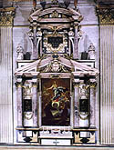

Church
at Osimo built (1648)

(What
the Church at Osimo interior may have looked like.)
On June 20, 1648, the Bishop of Osimo, Cardinal Girolamo Verospi, laid the cornerstone for the construction of a church for the Capuchin monastery in Osimo, replacing an older church dedicated to Saints Helen and Dionysius. As stated in the inscription on the cornerstone, this new church was to be dedicated to The Immaculate Conception. Only a year later, Pier Filippo Fiorenzi, the archdeacon of the new church, commissioned an altarpiece, illustrating the theme of The Immaculate Conception. Even though the Fiorenzi family built the church and paid for the altarpiece, Cardinal Verospi acted as liaison between painter and patron in Rome.